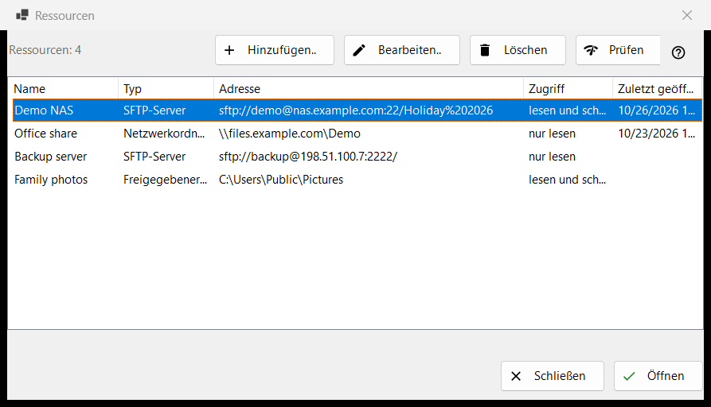
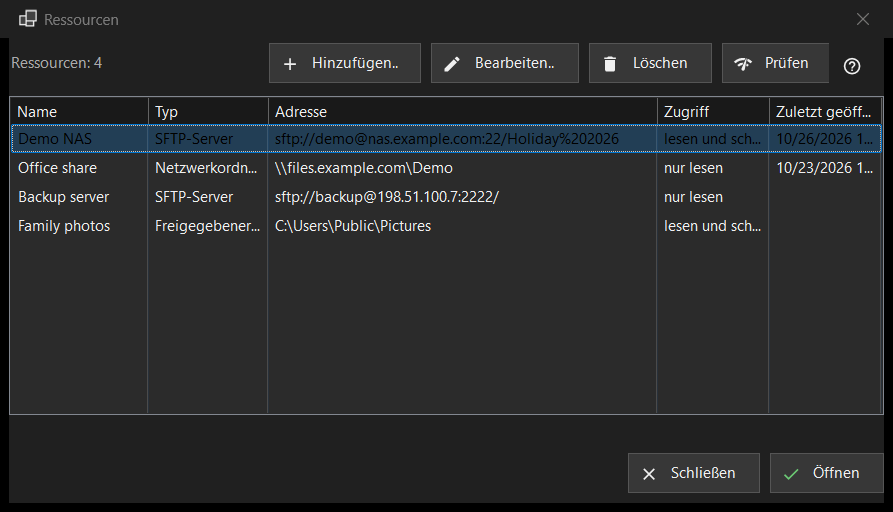

Ressourcen
Verwendungszweck
Die Liste der Server und Netzwerkordner, die das Programm öffnen kann: SFTP-Server, Windows-Netzwerkordner (SMB) und Ordner, die Share Manager von diesem Computer aus freigibt. Sie öffnet sich über «Ressourcen verwalten..» im Ordnermenü; dieselbe Liste steht auf der Seite «Server und Ressourcen» im Einstellungsfenster.


In dieser Reihenfolge
- Drücken Sie «Hinzufügen..» und tragen Sie den Server ein, oder holen Sie über die Schaltfläche «Mehr» eine Einstellungsdatei herein.
- Wählen Sie die neue Zeile aus und drücken Sie «Prüfen».
- Drücken Sie «Öffnen» oder klicken Sie doppelt auf die Zeile: Das Programm verbindet sich und zeigt den Ordner des Servers.
- Mit «Bearbeiten..» ändern Sie eine Adresse oder ein Kennwort, mit «Löschen» vergessen Sie eine Ressource.
Die Elemente
Die Liste
Spalten: Name, Typ, Adresse, Zugriff und Zuletzt geöffnet. Der Typ ist «SFTP-Server», «Netzwerkordner (SMB)» oder «Freigegebener Ordner (Share Manager)»; unter Zugriff steht «Schreibgeschützt» oder «Lesen und Schreiben». Eine Zeile unter der Liste zählt die Ressourcen; ist die Liste leer, zeigt das Fenster einen Hinweis und die Schaltfläche «Hinzufügen..». Bearbeiten, Löschen und Prüfen (und Öffnen in der unteren Reihe des Ressourcen-Fensters) brauchen eine ausgewählte Zeile; bis dahin lautet ihr Tooltip «Wählen Sie zuerst eine Ressource in der Liste aus».
Hinzufügen.. und Bearbeiten..
«Hinzufügen..» öffnet das Formular einer neuen Ressource und «Bearbeiten..» das Formular der ausgewählten. Ein dort eingegebenes Kennwort wird für Ihr Windows-Konto verschlüsselt gespeichert, nie in der Liste selbst.
Löschen
«Löschen» fragt vorher nach, und die Standardantwort ist Nein. Die Frage nennt die Ressource und sagt, dass auch das dafür gespeicherte Kennwort entfällt, während die Dateien auf dem Server unberührt bleiben.
Prüfen
«Prüfen» testet die ausgewählte Zeile, ohne sie zu öffnen. Bei einem SFTP-Server probiert es jede bekannte Adresse der Ressource aus und meldet jede als Host:Port mit einem Urteil: Eine lebendige SSH-Antwort macht die Prüfung zu einem Erfolg, ein offener Port ohne SSH ist eine Warnung, Schweigen ist ein Fehlschlag. Es wird kein Kennwort gesendet. Bei einem Netzwerkordner öffnet es die Freigabe mit dem gespeicherten Kennwort und liest ihren obersten Ordner; ist kein Kennwort gespeichert, werden Sie gebeten, eines über «Bearbeiten..» einzugeben. Bei einer Share-Manager-Zeile wird nur geprüft, ob der Ordner auf diesem Computer existiert.
Öffnen
«Öffnen» oder ein Doppelklick auf eine Zeile übergibt die Ressource an das Programm, das sich verbindet und ihren Ordner zeigt. Ist kein Kennwort gespeichert oder wird das gespeicherte abgelehnt, fragt zuerst ein kleines Fenster danach.